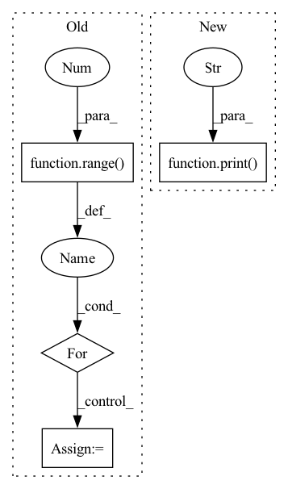

Pattern ID :3958

Before Change
]
dace_inputs = [
torch.empty(*shape, dtype=torch.float32, requires_grad=False)
for _ in range(5)
]
pytorch_outputs = []
for inp, inp_src in zip(pytorch_inputs, input_values):
inp.copy_(inp_src)
inp.requires_grad = True
s = module(inp).sum()
s.backward()
pytorch_outputs.append(inp.grad)
print(pytorch_outputs[-1])
dace_module = DaceModule(module, backward=True)
dace_outputs = []
for inp, inp_src in zip(dace_inputs, input_values):
inp.copy_(inp_src)
inp.requires_grad = True
s = dace_module(inp).sum()
s.backward()
dace_outputs.append(inp.grad.clone().detach())
After Change
s = module(pytorch_input).sum()
s.backward()
print("Pytorch output:")
print(pytorch_input.grad)
dace_module = DaceModule(module, backward=True)
In pattern: SUPERPATTERN
Frequency: 4
Non-data size: 4
Instances
Fragment ID: 14844130
Project Name: spcl/daceml
Commit Name: 682aea4a22edc4a5268188596bcf443bd041a0a7
Time: 2021-03-01
Author: oliverrausch99@gmail.com
File Name: tests/autodiff/pytorch/test_pytorch.py
M Class Name: AnonimousClass
N Class Name: AnonimousClass
M Method Name: run_pytorch_module(3)
N Method Name: run_pytorch_module(2)
M Parent Class:
N Parent Class:
M File Name: tests/autodiff/pytorch/test_pytorch.py
N File Name: tests/autodiff/pytorch/test_pytorch.py
M Start Line: 13
M End Line: 45
N Start Line: 10
N End Line: 44
'>
Before Change
values.append("critic_lr")
names.append("clr=")
unique_token = _config[values[0]]
for i in range(1, len(names)):
unique_token = unique_token + "__{}{}".format(names[i], str(_config[values[i]]))
unique_token += "__" + _config["time"]
_config["tb_path"] = os.path.join(dirname(abspath(__file__)), "results", _config["env"], unique_token)
After Change
elif _config["buffer_type"] == "episode":
run_episode(_run, _config, _log, env)
else:
print("error: buffer_type not recognized!")
def _get_config(params, arg_name, subfolder):
config_name = None
'>
Fragment ID: 14844128
Project Name: chaovven/pyrl
Commit Name: c7dc1efa78abb14fc7f95f0f88d4c194abb934ab
Time: 2020-05-08
Author: aaron.csie@gmail.com
File Name: main.py
M Class Name: AnonimousClass
N Class Name: AnonimousClass
M Method Name: my_main(3)
N Method Name: my_main(3)
M Parent Class:
N Parent Class:
M File Name: main.py
N File Name: main.py
M Start Line: 29
M End Line: 56
N Start Line: 25
N End Line: 59
'>
Before Change
val_pvars = []
inputs = self.raw_time_series[:, 0, :].clone().unsqueeze(1).to(self.model.device)
for _ in range(100):
val_x_pred = self.model.get_prediction_trace(inputs)
pvar = PVarianceLoss()(val_x_pred, self.raw_time_series.to(val_x_pred.device))
val_pvars.append(to_numpy(pvar).item())
print(f"Validation PVariance: {np.mean(val_pvars):.3f}")
return x_pred, self.raw_time_series
After Change
mses.append(to_numpy(mse).item())
val_pvar = self.validate(100)
print(f"Validation PVariance: {val_pvar:.3f}")
return x_pred, self.raw_time_series
def validate(self, n: int = 1):
val_pvars = []
'>
Fragment ID: 14844118
Project Name: neurotorch/neurotorch
Commit Name: 9ba260c32491b2e046fbd60f8599ede10b9e6273
Time: 2023-02-01
Author: 93488840+AnthoDrouin@users.noreply.github.com
File Name: src/neurotorch/learning_algorithms/debug_e_prop_v5.py
M Class Name: SimplifiedEpropFinal
N Class Name: SimplifiedEpropFinal
M Method Name: train(4)
N Method Name: train(4)
M Parent Class:
N Parent Class:
M File Name: src/neurotorch/learning_algorithms/debug_e_prop_v5.py
N File Name: src/neurotorch/learning_algorithms/debug_e_prop_v5.py
M Start Line: 116
M End Line: 145
N Start Line: 126
N End Line: 146
'>
Before Change
x_pred.append(self.true_time_series[:, 0, :].clone())
forward_tensor = self.true_time_series[:, 0, :].clone().to(reservoir.device)
hh = None
for t in range(1, self.true_time_series.shape[-2]):
forward_tensor, hh = unpack_out_hh(reservoir(forward_tensor, hh, t=t-1))
forward_tensor, _ = unpack_out_hh(output_layer(forward_tensor, None, t=t-1))
x_pred.append(forward_tensor)
// eligibility_traces = dy_dw_local(y=forward_tensor, params=self.params)
// self.eprop.eligibility_traces = eligibility_traces
// batch_loss = self.eprop.apply_criterion(forward_tensor, self.true_time_series[:, t].to(forward_tensor.device))
// learning_signals = self.compute_learning_signals(loss_at_t)
// errors = self.eprop.compute_errors(forward_tensor, self.true_time_series[:, t])
// learning_signals = self.eprop.compute_learning_signals(errors)
// self.eprop.update_grads(errors, batch_loss)
forward_tensor.detach_()
hh = recursive_detach(hh)
// if t % self.update_each == 0:
// self.eprop._make_optim_step()
self.eprop._make_optim_step()
After Change
val_x_pred = self.model.get_prediction_trace(inputs)
pvar = PVarianceLoss()(val_x_pred, self.raw_time_series.to(val_x_pred.device))
val_pvars.append(to_numpy(pvar).item())
print(f"Validation PVariance: {np.mean(val_pvars):.3f}")
return x_pred, self.raw_time_series
def compute_learning_signals(self, error: torch.Tensor):
learning_signals = []
'>
Fragment ID: 14844122
Project Name: neurotorch/neurotorch
Commit Name: da8d4065502c761ccf6e28e47dd189e3b5488140
Time: 2023-01-31
Author: 50332514+JeremieGince@users.noreply.github.com
File Name: src/neurotorch/learning_algorithms/debug_e_prop_v5.py
M Class Name: SimplifiedEpropFinal
N Class Name: SimplifiedEpropFinal
M Method Name: train(4)
N Method Name: train(4)
M Parent Class:
N Parent Class:
M File Name: src/neurotorch/learning_algorithms/debug_e_prop_v5.py
N File Name: src/neurotorch/learning_algorithms/debug_e_prop_v5.py
M Start Line: 120
M End Line: 153
N Start Line: 115
N End Line: 144